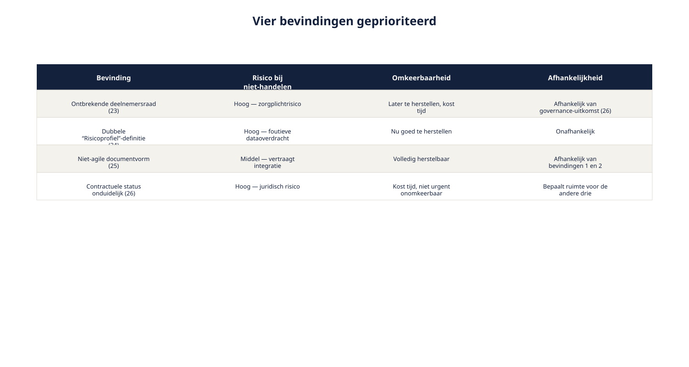
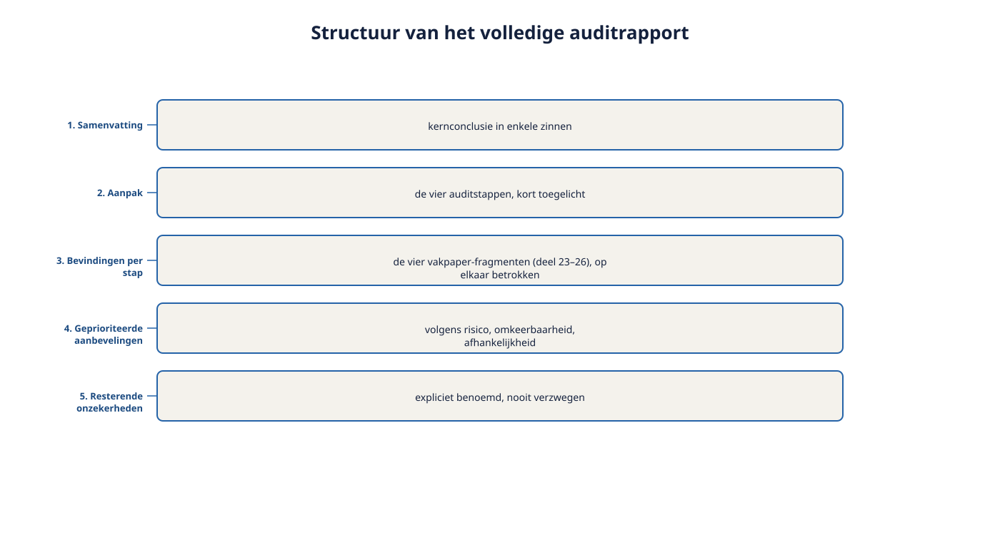

Cursus Requirements engineering · Niveau 3 (CPRE Expert Level) · Deel 29 van 30
De requirements- auditmethodiek.
Deel 23 tot en met 26 leverden elk een vakpaper-fragment op over een deel van het Kwintes-document: de elicitatie, de modellen, de agile-integratie, de contractuele status. Voor de masterproef moeten deze vier fragmenten worden samengebracht tot één samenhangend auditrapport — niet vier losse documenten, maar één verhaal met één, doorleefde conclusie.
7secties
±1,5uleestijd + werkboek
5controlevragen
4auditstappen
Positionering. Dit deel bereidt rechtstreeks voor op de masterproef in deel 30 en is uitdrukkelijk geen vervanging van het officiële IREB-examenmateriaal, te raadplegen via ireb.org. Alle formuleringen, figuren en werkvormen in dit materiaal zijn van Ductus; studeer voor het examen altijd óók de bron.
Niveau 3: 23 Elicitation Specialist: van toepassen naar verantwoorden → 24 Modeling Specialist: modelleren op stelselniveau → 25 RE@Agile Specialist: agile werken op stelselschaal → 26 Management Specialist: beheer op stelselniveau → 27 Expert: kennisoverdracht en RE-volwassenheid → 28 Expert: governance → 29 Voorbereiding masterproef (hier) → 30 De masterproef
01
Waar dit deel over gaat
⏱ 8 min
Deel 27 en 28 gaven Ruben het instrumentarium van de Expert-rol: kennisoverdracht binnen de organisatie, en adviseren en governance naar buiten toe. Dit deel keert terug naar het dossier waar niveau 3 mee opende — het Kwintes-document — en brengt alles wat daarover in deel 23 tot en met 26 is vastgesteld samen tot één instrument: de requirements-auditmethodiek. Dit is de laatste stap vóór de masterproef zelf, waarin het volledige auditrapport wordt verdedigd tegenover een boardsimulatie.
Aan het eind van dit deel kunt u:
de vier Specialist-audits uit deel 23-26 samenbrengen tot één samenhangende requirements-auditmethodiek;
een volledig auditrapport opstellen voor een geërfd requirementsdocument;
een prioritering aanbrengen tussen meerdere gevonden gebreken;
je voorbereiden op de verdediging van dat rapport tegenover een boardsimulatie.
02
Vier fragmenten, één geheel
⏱ 8 min
Deel 23 tot en met 26 leverden elk een vakpaper-fragment op over een deel van het Kwintes-document: de elicitatie (23), de modellen (24), de agile-integratie (25), de contractuele status (26). Voor de masterproef moeten deze vier fragmenten worden samengebracht tot één samenhangend auditrapport — niet vier losse documenten, maar één verhaal met één, doorleefde conclusie.
Dit is zelf een Expert-vaardigheid: de synthese is meer dan de som van de delen. Vier afzonderlijk correcte bevindingen kunnen, samen bekeken, een patroon onthullen dat in geen van de vier fragmenten apart zichtbaar was — zoals paragraaf 29.3 verderop laat zien voor de ontbrekende deelnemersraad en de contractuele status.
03
De requirements-auditmethodiek
⏱ 16 min
Een samenvattend overzicht van de vier auditvormen, nu als één stappenplan.
Stap
Vraag
Techniek
Uit deel
1. Elicitatie-audit
Was de onderliggende elicitatie waarschijnlijk gedegen?
Stakeholderoverzicht, sporen van doorvragen, tegenstrijdigheden
23
2. Model-audit
Sluiten de modellen aan op de rest van het stelsel?
Terminologie-, grens-, relatievergelijking
24
3. Integratie-audit
Hoe verhoudt het document zich tot de agile werkwijze van het stelsel?
Beoordeling vóór vertaling naar backlogitems
25
4. Governance-audit
Wat is de juridische en beheersmatige status?
Interne versus contractuele baseline
26
Figuur 29-1 — de vier auditstappen als opeenvolgend stappenplan, elk met verwijzing naar de bijbehorende techniek
De volgorde is niet toevallig. Elicitatie- en model-audit (stap 1-2) bepalen de inhoudelijke betrouwbaarheid van het document. Integratie-audit (stap 3) bepaalt de praktische bruikbaarheid binnen de huidige werkwijze. Governance-audit (stap 4) bepaalt de formele ruimte om iets met de bevindingen te doen. Deze volgorde voorkomt dat u tijd besteedt aan een integratie- of governance-vraag voordat vaststaat of de inhoud zelf betrouwbaar is.
Controlevragen
Uit Werkboek deel 29, Opdracht 29.1 — de vier stappen herkennen
1"Is er iemand relevant die nooit is geraadpleegd?" Bij welke auditstap hoort deze vraag?Toon antwoord
Elicitatie-audit. Deze vraag toetst rechtstreeks of het stakeholderoverzicht compleet was — precies de eerste vraag van de auditmethodiek: was de onderliggende elicitatie waarschijnlijk gedegen?
2"Past dit in de backlog van het huidige team, of vraagt het een aparte behandeling?" Bij welke auditstap hoort deze vraag?Toon antwoord
Integratie-audit. De vraag gaat over hoe het document zich verhoudt tot de agile werkwijze van het stelsel — de derde stap, die de praktische bruikbaarheid binnen de huidige werkwijze bepaalt, ná de inhoudelijke stappen 1 en 2.
04
Bevindingen prioriteren
⏱ 14 min
Een auditrapport met alleen een lijst bevindingen is niet compleet — een Expert prioriteert, net zoals requirements zelf geprioriteerd worden (deel 9, niveau 1; deel 17, niveau 2).
Criteria voor prioritering van auditbevindingen:
Risico bij niet-handelen — kan dit tot een fout leiden die deelnemers, het stelsel, of de aantoonbaarheid richting toezicht schaadt?
Omkeerbaarheid — is dit later nog te herstellen, of wordt het probleem groter naarmate het langer blijft liggen?
Afhankelijkheid van andere bevindingen — moet dit eerst worden opgelost voordat een andere bevinding zinvol kan worden aangepakt?

Figuur 29-2 — de vier bevindingen uit deel 23-26 geprioriteerd volgens deze drie criteria
Toegepast: de ontbrekende deelnemersraad (deel 23) en de contractuele status (deel 26) zijn onderling afhankelijk — een aanvullende elicitatie kan pas plaatsvinden nadat is vastgesteld hoe dit binnen het contract mag. Dit soort afhankelijkheden tussen bevindingen is precies waarom de synthese uit paragraaf 29.1 meer oplevert dan vier losse fragmenten.
Controlevraag
Uit Werkboek deel 29, Opdracht 29.2 — bevindingen prioriteren
1Prioriteer de vier bevindingen uit deel 23-26 (ontbrekende deelnemersraad, dubbele Risicoprofiel-definitie, KERN-sprintmismatch, contractuele status) met de drie criteria uit paragraaf 29.3, en beargumenteer welke als eerste moet worden opgepakt.Toon antwoord
Voorbeeldprioritering: (1) Contractuele status (deel 26) — eerst, want dit bepaalt de formele ruimte om überhaupt iets aan de andere bevindingen te doen (afhankelijkheidscriterium). (2) Ontbrekende deelnemersraad (deel 23) — hoog risico (zorgplicht-raakvlak), maar afhankelijk van de uitkomst van 1. (3) Dubbele Risicoprofiel-definitie (deel 24) — hoog risico op foutieve dataoverdracht, relatief goed omkeerbaar zolang het vroeg wordt opgemerkt. (4) KERN-sprintmismatch (deel 25) — operationeel relevant, maar het minst risicovol voor het stelsel als geheel. Een andere volgorde kan ook verdedigbaar zijn, zolang de argumentatie de drie criteria expliciet gebruikt — het gaat om de methode, niet om één "juiste" volgorde.
05
Het auditrapport opstellen
⏱ 14 min
Een compleet auditrapport bouwt voort op de vakpaper-structuur (deel 23, paragraaf 23.4), nu op het niveau van het hele document in plaats van één deelvraag:
Samenvatting — de kernconclusie in enkele zinnen, geschikt om als eerste te lezen door iemand met weinig tijd (vergelijk paragraaf 28.3: doelgroepgerichte vertaling).
Aanpak — de vier auditstappen, kort toegelicht.
Bevindingen per stap — de vier vakpaper-fragmenten, samengevat en op elkaar betrokken.
Geprioriteerde aanbevelingen — volgens de criteria uit paragraaf 29.3.
Resterende onzekerheden — expliciet benoemd, zoals in elk voorgaand deel benadrukt: nooit verzwegen.

Figuur 29-3 — de structuur van het volledige auditrapport, met de vier vakpaper-fragmenten als bouwstenen voor sectie 3
Controlevraag
Uit Werkboek deel 29, Opdracht 29.3 — een auditrapport-samenvatting schrijven
1Schrijf, op basis van de vier bevindingen, een samenvatting van maximaal 200 woorden, geschikt om als eerste te lezen door Hetty voorafgaand aan een bestuursvergadering. Waarop wordt zo'n samenvatting beoordeeld?Toon antwoord
Geen vast modelantwoord. Een sterke samenvatting noemt alle vier bevindingen kort, geeft een helder algemeen oordeel — bijvoorbeeld: "het document kan niet zonder meer als baseline dienen" — en eindigt met een concrete, actiegerichte aanbeveling, binnen 200 woorden en zonder jargon dat een bestuurslid zonder RE-achtergrond niet zou begrijpen. Dit is dezelfde doelgroepgerichte vertaling die paragraaf 28.3 al oefende, nu toegepast op het rapport als geheel.
06
Voorbereiding op de verdediging
⏱ 12 min
Bij de masterproef (deel 30) wordt dit auditrapport verdedigd tegenover vier rollen. Enkele laatste voorbereidingspunten, aanvullend op deel 28:
Ken je eigen zwakste bevinding. Elke auditor heeft een punt waarvan de onderbouwing het minst hard is — weet welk dat is, en wees daar het meest voorbereid op kritische vragen.
Weet welke aanbeveling het meest ingrijpend is, en waarom die toch nodig is. Een boardsimulatie zal vaak juist op de zwaarste aanbeveling doorvragen ("is dit niet buitenproportioneel?").
Oefen de samenvatting hardop. De eerste indruk (sectie 1 van het rapport) bepaalt vaak de toon van het hele gesprek.
Wat verandert er op Expert-niveau?
Waar de Specialist-trap vier afzonderlijke, diepgaande oordelen vroeg, vraagt dit deel de synthese daarvan tot één samenhangend, geprioriteerd advies — en de voorbereiding om dat advies onder kritische druk staande te houden. Dit is de laatste stap vóór de masterproef zelf.
Controlevraag
Uit Werkboek deel 29, Opdracht 29.4 — de zwakste bevinding identificeren
1Bepaal, van de vier bevindingen uit deel 23-26, welke naar uw inschatting de minst harde onderbouwing heeft, en beschrijf welke kritische vraag een boardsimulatie daarover het meest waarschijnlijk zou stellen.Toon antwoord
Geen vast modelantwoord. Een sterke uitwerking benoemt bijvoorbeeld de elicitatie-audit (deel 23) als relatief zwak, omdat deze op indirect bewijs berust — er is geen garantie, alleen een gefundeerde inschatting, expliciet erkend in paragraaf 23.2 van deel 23 zelf. Een sterke voorbereiding erkent deze onzekerheid hardop zonder de conclusie te laten wankelen, in plaats van te doen alsof het bewijs harder is dan het is.
07
Vooruit naar deel 30
⏱ 6 min
De methodiek staat: vier auditstappen in een vaste volgorde, drie prioriteringscriteria, een vijfdelige rapportstructuur, en drie voorbereidingspunten voor de verdediging. Wat rest, is het werk zelf: het volledige auditrapport over het Kwintes-document afronden, en het verdedigen.
Vooruit naar deel 30. Deel 30 is de masterproef: twee dagdelen, met het volledige auditrapport en de verdediging ervan in een boardsimulatie tegenover vier rollen. Dit sluit niveau 3 en de volledige cursus af.
Verder naar deel 30
De requirements-auditmethodiek staat. Deel 30 is de masterproef: het volledige auditrapport over het Kwintes-document afronden en verdedigen tegenover een boardsimulatie van vier rollen — de afsluiting van niveau 3, en van de hele cursus.